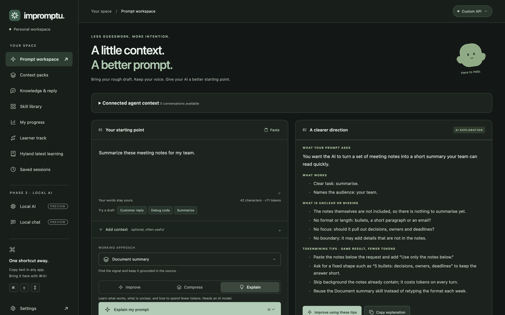
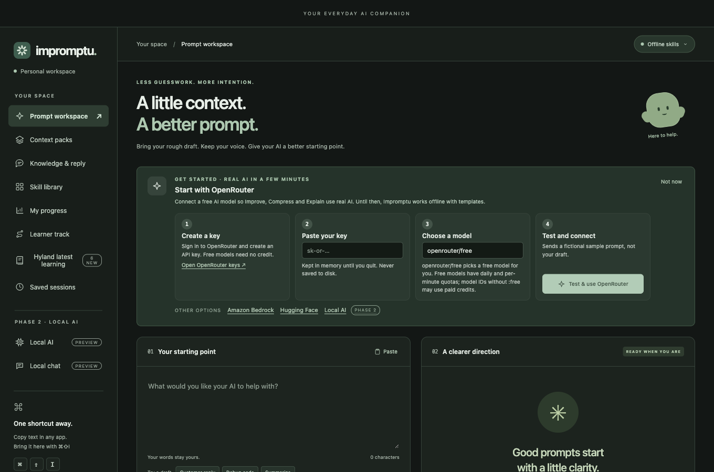
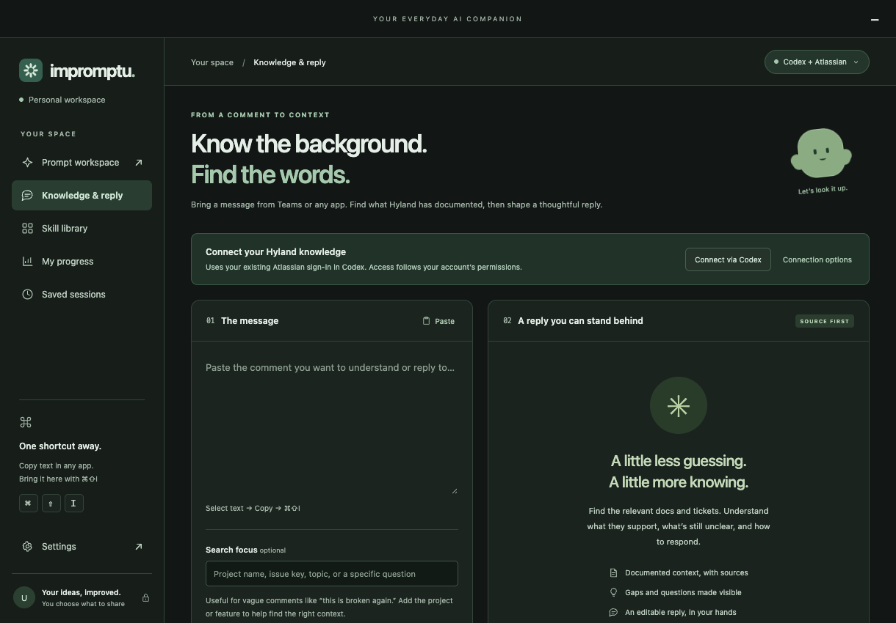
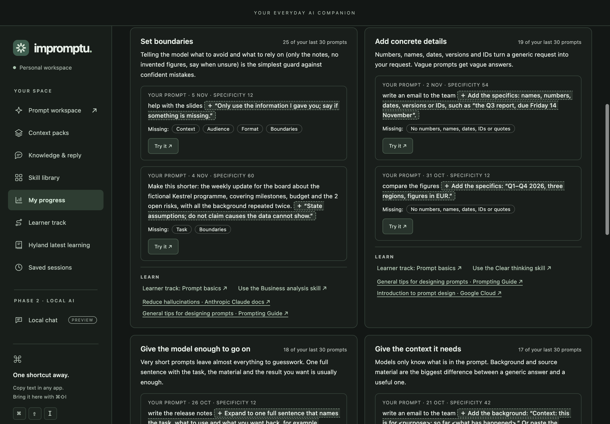
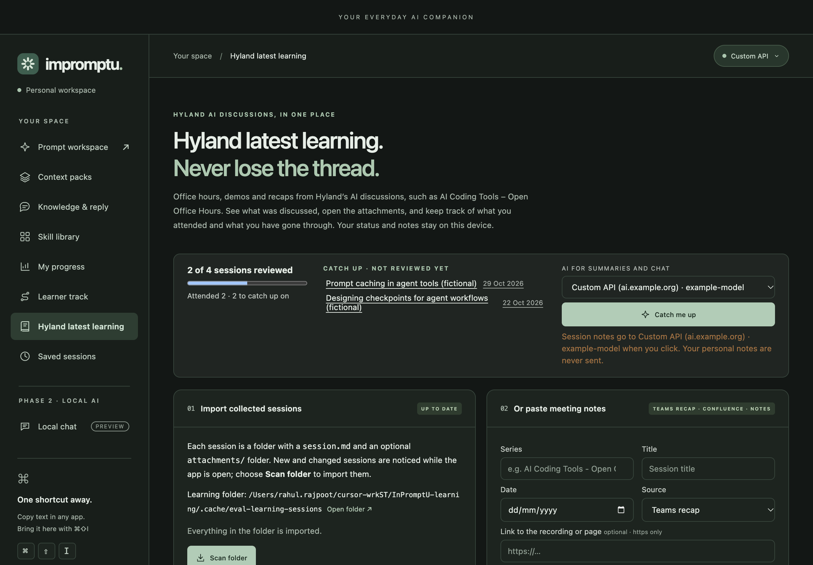
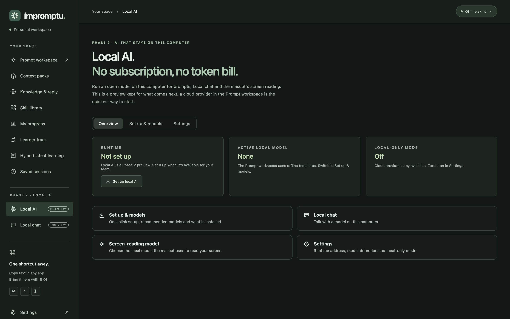

Get more from AI.
Spend less on it.
Impromptu: the desktop companion that teaches every Hylander to prompt better, on Mac and Windows.
AI is now a line item every team depends on,
and that makes us exposed.
Prices can jump any day
The moment investors decide to cash out.
A provider can go dark overnight
One government rule change, and whole industries vanish.
Hylanders.
By our own estimate, around half of us (HR, sales, marketing, support and more) were never taught how to prompt well.
Each dot ≈ 50 people · highlighted = never taught to prompt (estimate, to be measured in the pilot)
Re-asking. Re-explaining.
Pasting the same context again.
The cheapest token is the one you never had to send.
Teach every Hylander to prompt better.
From 0 to 0.
Same tools. Very different results.
Uneven results
Prompting is a skill nobody is taught.
Scattered context
Teams, Confluence, Jira and hour-long chats. Every conversation starts from zero.
Learning gets lost
AI sessions like Office Hours happen, but who caught up on what?
No way to see progress
Are people actually getting better at using AI?
Meet Impromptu.
Your everyday AI companion. On your Mac and Windows PC.

A companion between you and any AI.
any app · ⌘⇧I
cloud today · local AI in Phase 2
The habit it teaches: tokenmining, the same result from fewer tokens.
Eight things, shipped.
Prompt workspace
Improve · Compress · Explain
Hyland knowledge
Cited Confluence & Jira evidence
Context packs
Your context, your playground
Skillify
Prompts that worked → team skills
My progress
Private Prompt Specificity insights
Learner track
0 → 1,000 · opt-in leaderboard
Hyland latest learning
Track AI sessions · catch me up
On-screen mascot
Help and nudges, opt-in
Select. ⌘⇧I. Compress.
≈59% shorter · every detail kept, even the “do not”.


Answers grounded in what Hyland actually wrote.
Cited passages, your own permissions, nothing invented.
Your context, your playground.
Come back sharper
One hand-back prompt for your expensive model. Its context window, spent only on what matters.
A prompt that worked becomes a skill everyone can use.
“Every Friday I summarise the support tickets for my manager: group by product, flag anything older than five days…”
Weekly ticket digest
Group by product · flag tickets older than five days · end with three priorities. Shared with the team as a file.
Your weak spots, shown with your own prompts.
Private to you. Erase it any time.

0 → 1,000, one milestone at a time.
Ranked mode · opt-in
“LeetCode for prompters.” Only scores are shared, never prompts.
Illustrative names

Never lose track of what Hyland is learning.
Say hello to Impromptu.
Hyland's AI learning mascot. On every desktop. In every team. Every week.
Prompt better, Hyland.
Ask better.
Say what you need, the first time.
Send less.
The same result from fewer tokens.
Learn every week.
From prompts to agents, one step at a time.
A friendly nudge, right where you work.
Nothing leaves without your say-so.
One more thing.
Local AI.
No subscription. No token bill.
Local AI goes up. The bill comes down.
Illustrative: the shape we're aiming for, not measured data. The pilot measures the real numbers.
Built. Tested.
Waiting for a yes.
No subscription
Open models. No per-token bill.
Works offline
Keeps going if a provider goes dark.
Stays on the device
Prompts and screens never leave the machine.
One-click setup
Models matched to each computer.

Let's see it.
A pilot with 2–3 teams, including a non-technical one.
Tokens per accepted answer
Time to a usable result
Share of work on local AI
Prompt Specificity trend
Before and after, on real tasks. That's how we prove the savings instead of claiming them.
Help us take Impromptu to every Hylander.
- 1Approval for the Phase 2 local AI runtime
- 2A pilot with two or three teams
- 3A real code-signing certificate for company-wide rollout
5,000 Hylanders. One AI bill.
Half of us were never taught to prompt.
Impromptu fixes the root cause: it teaches everyone to get more from AI by sending less. And with local AI, the token bill goes away.